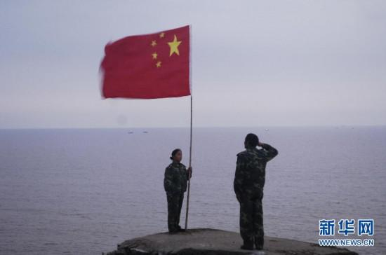

中新网南京7月29日电 (记者 崔佳明 通讯员 夏兴俭)全国“时代楷模”、江苏省“海防模范民兵哨所”、灌云县开山岛民兵哨所所长王继才同志因病医治无效不幸于2018年7月27日21时20分在灌云去世，终年59岁。

开山岛位于江苏连云港灌云燕尾港海面向东12海里处，面积为0.013平方公里。1986年，王继才、王仕花夫妇作为预备役民兵，受命守卫开山岛，当时岛上荒无人烟、寸草不生。王继才夫妇30多年如一日，在没有淡水、没有电、面积不足20亩的小岛上，默默坚守，把青春年华献给海防事业。夫妇两人先后获得年度“感动中国”候选人、全国情系国防好家庭、“全国十大海洋人物”等荣誉称号。2016年6月，江苏省委、省政府、省军区联合下发文件，授予开山岛民兵哨所“海防模范民兵哨所”等荣誉称号。为了宣传他们的先进事迹，弘扬他们的崇高精神，中宣部号召全社会向他们学习，开山岛夫妻哨是中宣部授予的第10个全国“时代楷模”。
现在开山岛新建了一座爱国主义教育基地，里面陈列了王继才夫妇守岛三十年的很多物件，如190多面被风雨撕破的国旗、40多本海防日志、1部手摇电话机、20台听坏的收音机、10多盏用坏的煤油灯。截至目前，已有近万人上岛接受教育，学习王继才夫妇坚守孤岛三十年，爱国奉献的赤子情怀。
王继才同志遗体告别仪式定于2018年7月30日(周一)上午8时30分，在灌云县殡仪馆(杨集)举行。(完)